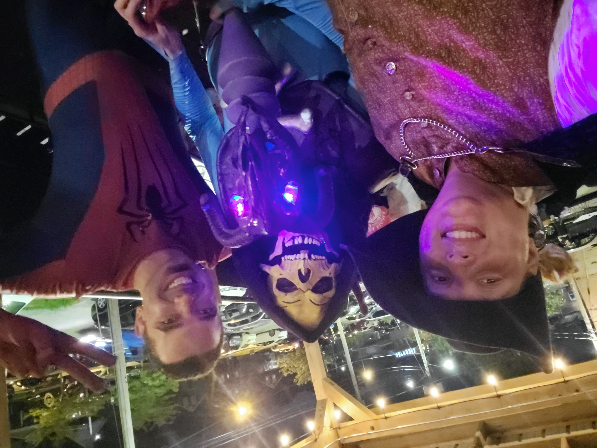
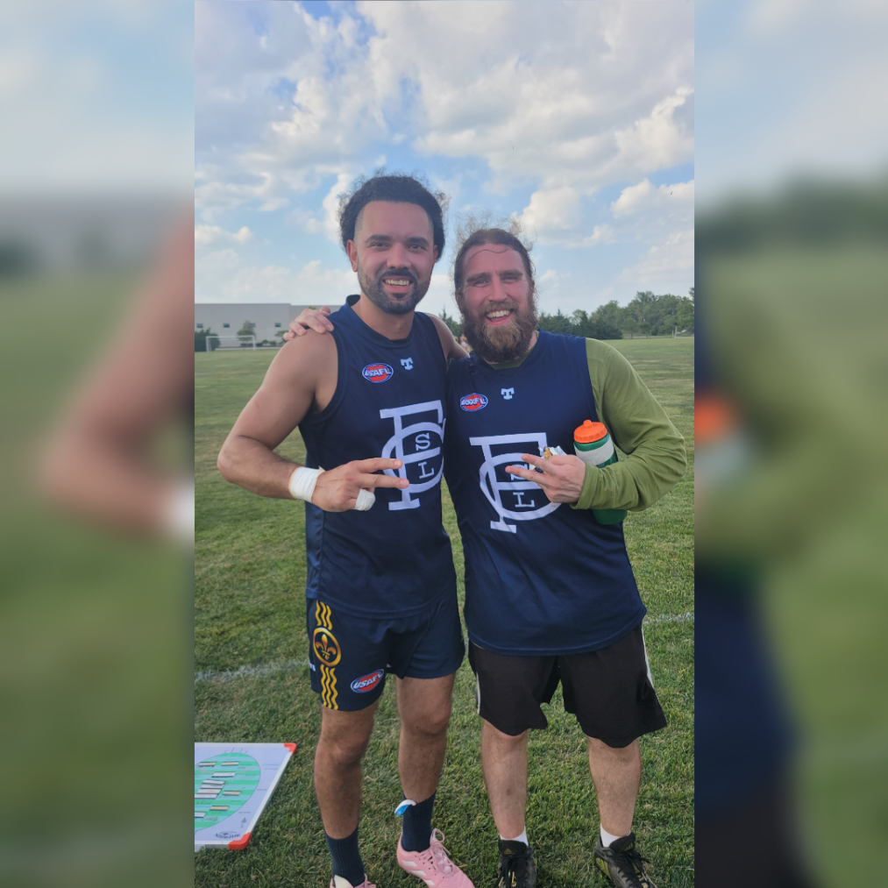
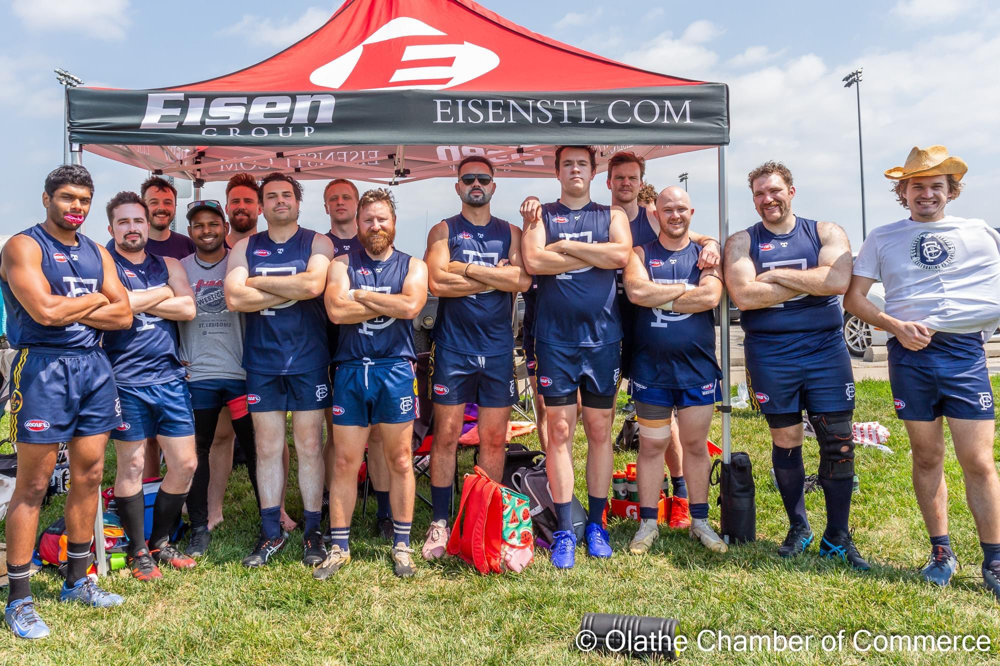

My First Year With The Saint Louis Australian Football Team
Introduction to the game
My first introduction to Australian Football, also known as "Footy", was in June of 2023.
I happened to go to a costume event at The Crow's Nest for their Halloween in June event and that's where I met a handful of my future teammates.
Bob enthusiastically told me about the game of Footy and from the moment on I was sold and showed up to the next practice. I tried to play in one game in 2022, but I realized my cardio was no where near where it needed to be.
So I used the rest of the season and off season to work on my own to try and resolve this issue before the 2023 season since it was already very late in the playing season when I joined the team.

Bob and I with a random patron at The Crow's Nest on Halloween in June
My first full season
I had spent a lot of my own time in the gym getting stronger and more importantly working on my cardio during the off season. Pre-season conditioning started in February and I was feeling great!
My mile time was in the upper percentile of the team now, I just had to learn the skills for the field. I didn't seem to have an issue with conditioning and the skills were coming along steady. I started to worry if I would be able to translate
this things onto the field. I never played any team field sports before, so this was a pretty big worry for me.
My selfie at our first pre-season field training session.
Let the games begin!
I made it a point to make myself available for every game as possible this season. I wanted to get as much experience as possible as quickly as possible. Traveling with the team was a lot of fun and I even managed to score my first goal at regionals.
All this playing time caught up to me though towards the end of the season as I ended up having some pretty serious overuse injuries on both of my knees. The injuries officially put me on the injury list. I was initially very upset about this,
but soon after is when I got accepted to LaunchCode! Classes were held at the exact days and time of our practices, but I didn't feel too bad about missing practice since I wasn't able to participate anyways due to the injuries.
I even ended up canceling my 4 day nationals trip so I could focus on class work and one of our Graded Assignments.

Me and Paul who gave me the assist on my first goal at regionals.

Team photo at Regionals tournament.
Post Season
After all is said and done this season didn't go exactly how I imagined, but I had a fantastic time. I made some really good friendships and got to travel the U.S. a bit. I learned some new physical skills and now I get to learn some more technical skills
with LaunchCode. Footy will be there next year!